A tour of the interface
The editor is one window: a menu bar over four panels. This page goes through them from top to bottom, then shows how to fold and resize the panels, how the window behaves when it is narrow, and how to change its theme.
The window at a glance
The pictures on this page show one project: the quadratic equation solved by completing the square. Its scene plays here, with the strip of its timeline under it:
Download it and open it in the editor to follow along: choose File ▸ Open… and press Other file… in the dialog (Projects and files explains it). Any other project has the same parts.
The menu bar
The bar runs along the top of the window. Its left half holds the menus and the export button.
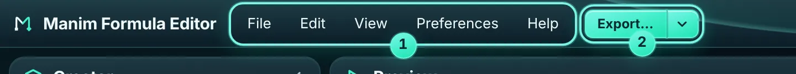
- The five menus. The table below says what each holds; Every menu lists every entry.
- Export… opens the Python export for the target you used last (ManimCE the first time). Its arrow lists every export: Python for ManimCE, Python for ManimGL, Video…, Image…, Audio… and HTML…. Exporting says what each gives.
| Menu | What it holds |
|---|---|
| File | New, Open…, Sync folder…, Recover autosave, Save, Save As… and Project settings…. Projects and files |
| Edit | Undo and Redo, Delete formula, copying the properties of a clip, Align and Distribute, Apply palette…, Match colors, Colours in order, the defaults for the intros and outros of new clips, and Suggest morph pairs, which gives a new Morph block pairs to start from. |
| View | The theme, which panels are shown, and Glyph source: which renderer draws the formulas. |
| Preferences | Snapping and its guides, the colour of the glyphs you pick with Alt, the transform handles, how faded the formulas locked in the Preview are drawn, the grid, the standard scale of new formulas, Chroma Lab and Editor palettes. |
| Help | Keyboard shortcuts…, Examples (the example projects the editor carries, Projects and files), Engine inspector…, Third-party licenses… and About. |
The right half of the bar is about the project you have open.
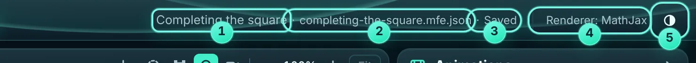
- The project's name. Click it to rename the project in place: type, then press Enter, or Esc to leave it as it was. A name too long for the bar is cut short; point at it to read the whole name and where it is saved.
- The file the project was opened from or saved to. It appears once the project has one.
- The mark: Not saved yet, Saved, Unsaved changes or Recovered, not saved. Projects and files says when each shows.
- The renderer that draws the formulas: MathJax in the browser, LaTeX when a companion supplies exact glyphs, mixed while both are in use. Point at it for the counts and for the state of the companion.
- The theme switch: dark or light. Themes has the rest.
Creator
The Creator, on the left, keeps what you can put in the scene. It has three tabs: Formulas (your formulas and texts), Templates (a library of ready-made formulas) and Audio (your recordings).
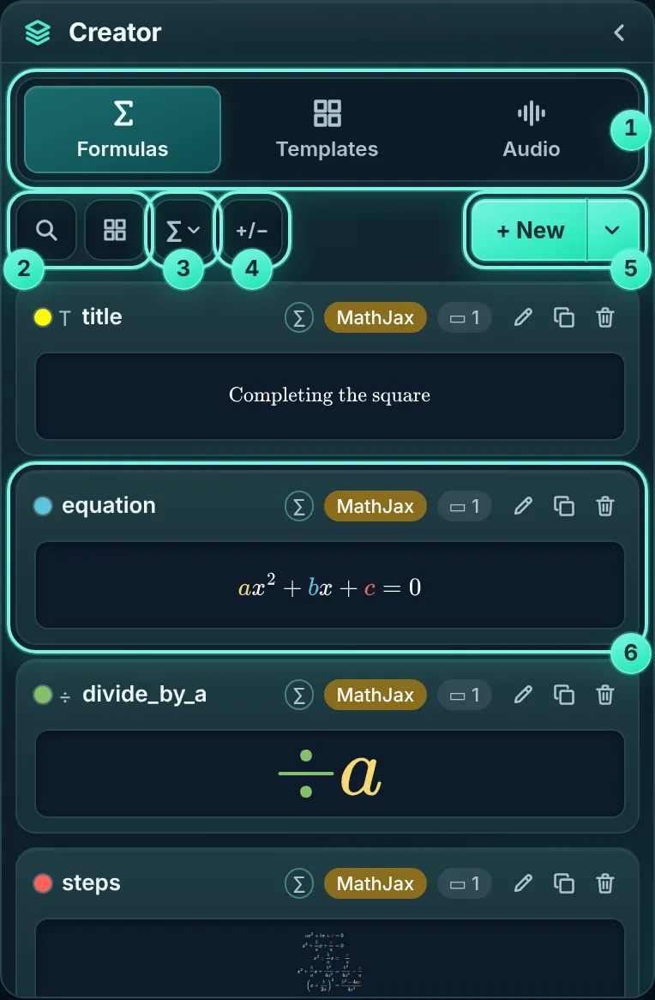
- The tabs: Formulas, Templates and Audio.
- The search (the magnifier, or Ctrl+F) and the key of the view, which switches the list between the list view, a row per formula with its rendering, and the block view, a grid of squares. It shows the icon of the view it switches to.
- The ∑ key: point at it, or click it, and its menu selects every formula, every LaTeX text or every font text of the project (see Select by kind). A row is greyed while the project has none of its kind.
- The +/− key makes the previews of the view you are in larger with a click and smaller with a right-click, up to three times: the rendering of each row in the list view, the tooltip beside a block in the block view (see Larger previews).
- + New writes a new formula. Its arrow lists the other kinds of object.
- A row: the formula's coloured tag, its name (double-click it, or press F2, to rename), a badge for its kind (∑ formula, T LaTeX text, P font text), a badge for how it was drawn (MathJax, or exact for LaTeX through the companion), how many clips use it, and the buttons to edit, duplicate and delete it. The drawing under the row shows the formula itself.
Double-click a row to edit its formula, and drag it onto a track of the timeline to put it in the scene. The Creator starts as a fifth of the window, which in a small window can cut long names and the renderer badge: drag the gap beside it to widen it, as the picture above shows. The arrow of + New offers three kinds of object:
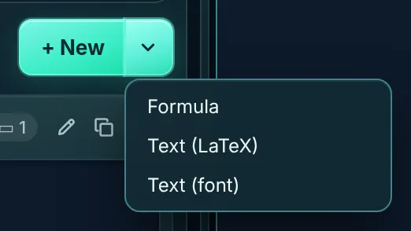
Braces, shapes, lines and arrows are not written in the Creator: braces and shapes are added from a clip, and lines and arrows from a clip or from a right-click on empty space in the Preview, as the pages on braces, shapes and lines and arrows show. For writing formulas and texts, see Writing formulas and LaTeX texts and font texts.
Preview
The Preview, in the middle, draws the scene at the playhead, the way the video will show it. The rectangle in the project's background colour is the frame of the scene: what the video will show. Click a formula to select its clip, drag it to move it. A hint at the bottom of the frame says what the pointer can do at that moment, for example that holding Shift shows the transform handles.
On its title bar, at the right, are the tools of the view:
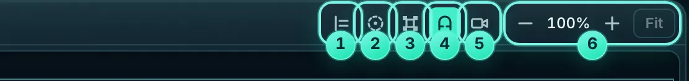
- Align by symbol (Alt+G): click a symbol to move, then the symbol it should line up with. Align by symbol
- Circle selector (S): the pointer becomes a circle that picks the nearest symbol, so that thin symbols such as a minus sign can be picked.
- Keep the transform handles shown: the handles that scale and rotate the selected clip show only while you hold Shift, unless you press this.
- Snap to objects: a dragged formula snaps to the edges and centres of the others and of the frame. Hold Ctrl to suspend it.
- Multicamera (Alt+M): gives the scene a camera that can move and zoom while the video plays. The camera
- The zoom: Zoom out, the percentage, Zoom in, and Fit, which shows the whole frame again. Zoom with Ctrl and the wheel, and pan with the middle button.
Under the Preview is the playback bar:
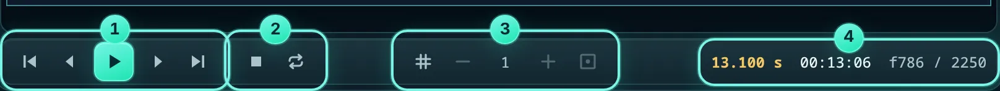
- The playback keys: Go to start (Home), Previous frame (←), Play and Pause (Space), Next frame (→) and Go to end (End). With Shift the arrows step a second.
- Stop, which also returns to the start, and Loop.
- The grid: show it, make it sparser or denser, and choose whether it holds the formula's centre or its nearest edges while you drag. Placing things in the Preview
- The time of the playhead, three ways: in seconds, as minutes, seconds and frames, and as the frame number out of the total.
Animations
The Animations panel, on the right, edits whatever you have selected. With nothing selected it says Select a clip on the timeline to edit its animations. Select a clip, and it shows that clip:
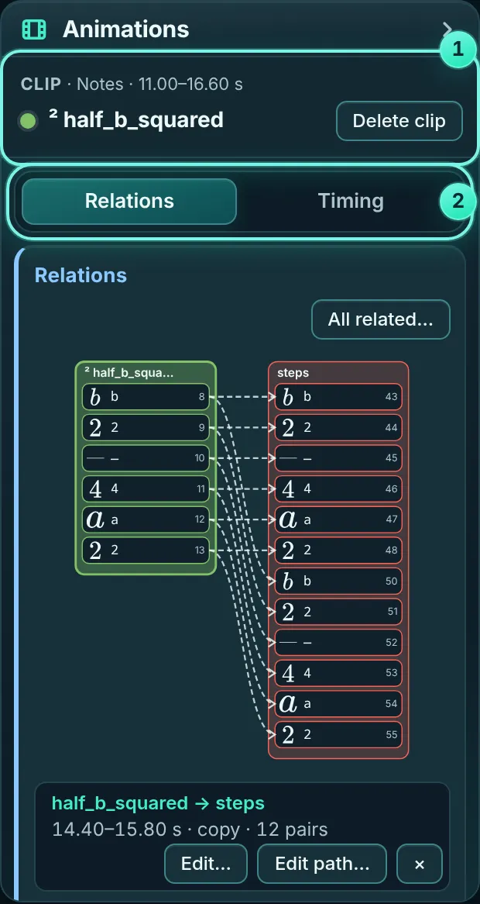
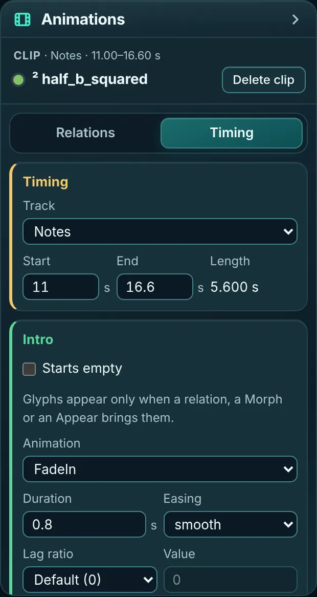
- The header names the clip and where it is, and has Delete clip.
- Relations shows how the glyphs of this clip are linked to the glyphs of other clips, and lets you add, edit and remove relations. How relations work
- Timing holds the clip's track, start, end and length; its intro; its initial state (position, scale, colour); its animation blocks, with Add animation; and its outro. Appearing and disappearing, animation blocks
The panel follows the selection: it shows an animation block's own settings when you select a block, the clips of a formula you select in the Creator, and the properties of an audio clip when you select one.
Timeline
The Timeline, along the bottom, lays the scene out in time. Its toolbar is on top, then the ruler, then one row for each track: a header on the left and, beside it, the lane that holds the clips.
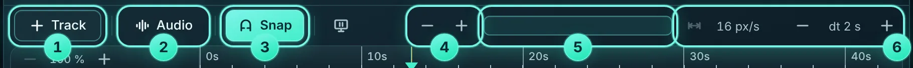
- + Track adds a track on top of the others, in front of them.
- Audio adds an audio track, for recordings.
- Snap makes clips snap to the playhead, to the edges of other clips and to the time grid. Hold Shift to suspend it.
- The zoom keys, Zoom out and Zoom in.
- The slider moves the view along the timeline. Its thumb fills the bar while the whole timeline is in view, and gets shorter as you zoom in.
- The Show the whole timeline key, the zoom in pixels per second, and dt: the time between two small ticks of the ruler, which is also the step clips snap to. The − and + on either side of it set a dt of your own, until the zoom changes. A time step of your own
The key between Snap and the zoom keys turns the Slides mode on and off: the ruler then shows where the scene animates and where it rests, with its pauses and comments. Slides and the HTML page
Click or drag along the ruler to move the playhead. Each track has a header:
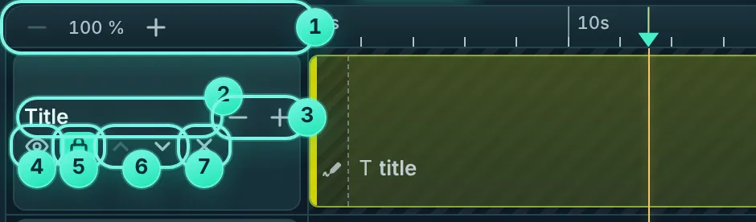
- The keys in the corner make every track lower or taller; the percentage between them puts every track back to the standard height.
- The track's name. Double-click it, or press Enter or F2, to rename the track.
- The height keys of this track alone, Lower and Taller.
- The eye hides the track in the Preview; a hidden track is still exported. On an audio track the key mutes it instead.
- The padlock locks the track: its clips cannot be edited.
- The arrows move the track towards the front or towards the back. The track at the top is drawn in front of the others.
- The cross deletes the track. The editor asks first, and lists what goes with it.
A clip is a block in a lane: its intro at the left, its outro at the right, and its animation blocks inside it as small coloured labels. Working with the timeline goes through all of it.
Folding and resizing panels
The gaps between the panels are handles: drag one to give a panel more room or less. The clip drags the gap between the Creator and the Preview, and then the edge of the Timeline, out and back.
The Creator, the Animations panel and the Timeline also fold to their title bars, so the Preview can have the room. Press the arrow in a panel's header, or double-click the header; press it again to bring the panel back. A panel keeps what it was showing while it is folded.
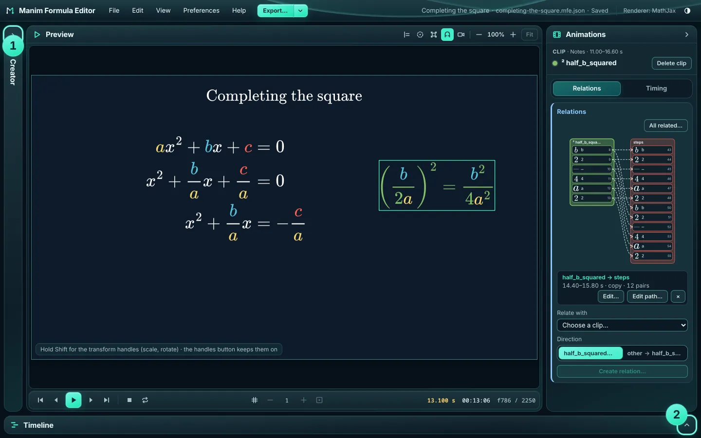
View ▸ Panels lists the three panels that fold, Creator, Animations and Timeline, ticked while they are open; choosing one folds it or brings it back. Outside a text field, the key C does it for the Creator and A for the Animations panel.
The sizes of the panels, and which ones are folded, are kept in this browser: the next time you open the editor, it looks as you left it. Dragging a gap past the smallest size a panel can have folds that panel.
Zen mode
On a small screen the four panels leave the Preview little room. Preferences ▸ Zen mode arranges the same window another way, designed for a screen of 1366 by 768 pixels: the Timeline becomes a column down the left side, and the Preview takes everything else. Nothing is taken away: the menus, the title bars of the panels and the transport are the ones you know.
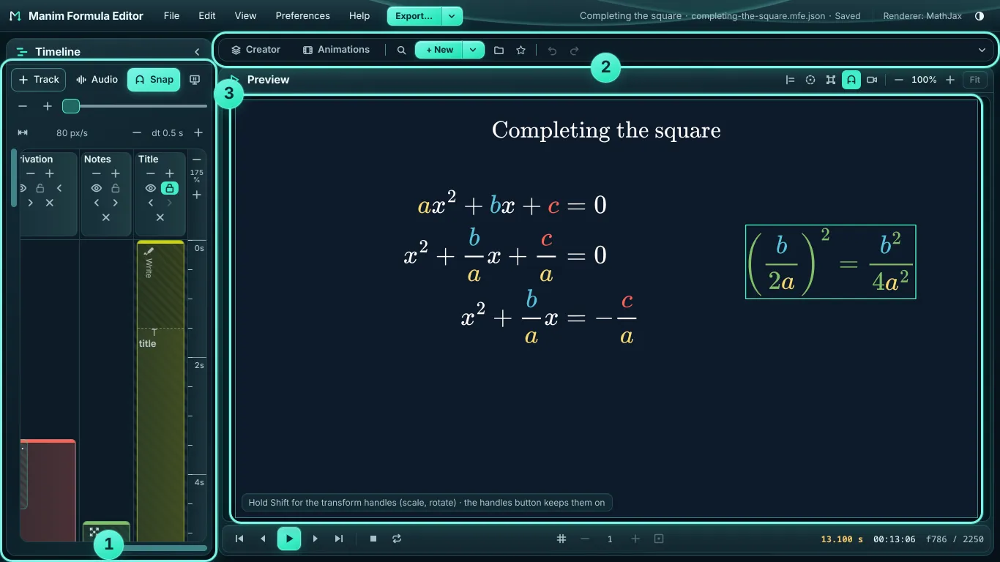
The Timeline is the same timeline, turned: time runs down the screen, and the tracks stand side by side. It is the usual timeline turned a quarter: the ruler runs down the right edge of the column, beside the Preview, so the pointer has a short way to it, and what is under the ruler in the usual layout is beside it here. The first track is the one next to the ruler, and the others follow to the left. The track headers are at the top of the columns, and the scrollbar of time is on the other side, down the left edge. Everything you do there works along the other direction of the screen:
- Drag a clip down to move it later, and sideways to put it on another track. Its start and its end are its top and its bottom edges.
- The wheel moves along time; Shift with the wheel moves across the tracks, and Ctrl with the wheel zooms about the time under the pointer.
- The arrow keys follow the screen: ↑ and ↓ go along time, ← and → across the tracks, → towards the ruler; Alt with ↑ or ↓ nudges a clip by a frame.
- The names of clips and tracks are written across their track, and cut with “…” where they do not fit. The name of an animation, on a block or on the intro or the outro of a clip, runs down what it names under its icon, and reads from top to bottom. The tracks start wider than in the usual layout; the two keys in a track's header, or its side edges, make it wider or narrower, and each layout keeps the sizes you give it.
The Creator and the Animations panel are behind the two buttons at the start of the strip. Each button opens and closes its own panel, as a half of a drawer over the Preview: the Creator on the left, the Animations panel on the right. Open both and they stand side by side; open one and you still see the Preview through the other half. A panel stays open while you work on the timeline. A press on the Preview's scene closes the drawer, and does what a press there always does; so does Esc, though in a field you are typing in Esc belongs to the field. From the keyboard, C opens and closes the Creator and A the Animations panel.
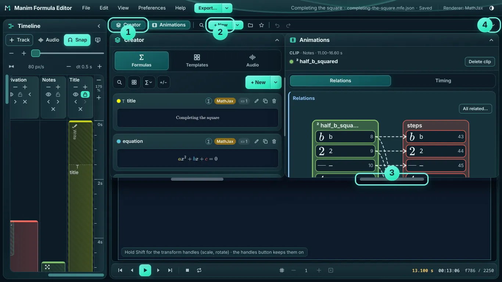
Drag the grip on the free edge of a panel to make the drawer taller or shorter, and the line where the two panels meet to give one of them more room; with either focused, the arrow keys do it in steps. The arrow at the far end of the strip moves the strip to the bottom of the Preview, and the drawer then rises from there; press it again to bring the strip back to the top.
The strip also keeps at hand what you would open the Creator for: the magnifier that searches the formulas, + New with the arrow that lists every kind of object, My templates and Favorites, and then Undo and Redo.
In Zen mode View ▸ Panels opens and closes the half of Creator and the half of Animations, and folds the Timeline to a strip at the left. The browser remembers the mode, the side of the strip, which panels were open, how tall the drawer was and where its halves met. A window narrower than about 760 pixels keeps the stacked layout below, with Zen mode on or off.
In any layout, hold T and move the mouse: the timeline's view moves along time with it, wherever the pointer is, as if you were dragging its scrollbar. Let go of the key and the view stays there. Hold Shift+T and the playhead follows the pointer instead, to the time the pointer is level with; let go and it stays there. While you hold the key, the Preview outlines and selects nothing of what the pointer passes over.
Narrow windows
Under about 760 pixels wide, on a phone or on a desktop zoomed to 400 %, four panels side by side would not fit. The window stacks them instead: the Creator, the Preview, the Animations panel and the Timeline, one under the other, each as tall as most of the window. The menu bar stays at the top, wrapped over as many lines as it needs, and the stack scrolls up and down under it, never sideways. The resizable layout comes back as soon as the window is wide enough. While the panels are stacked there is nothing to fold, and the three entries of View ▸ Panels are greyed out.
Themes
The editor has a dark theme and a light one, both in the same Mint style. It starts in the dark one. The half-filled circle at the right end of the menu bar, beside the renderer, flips between them: the whole window changes at once.
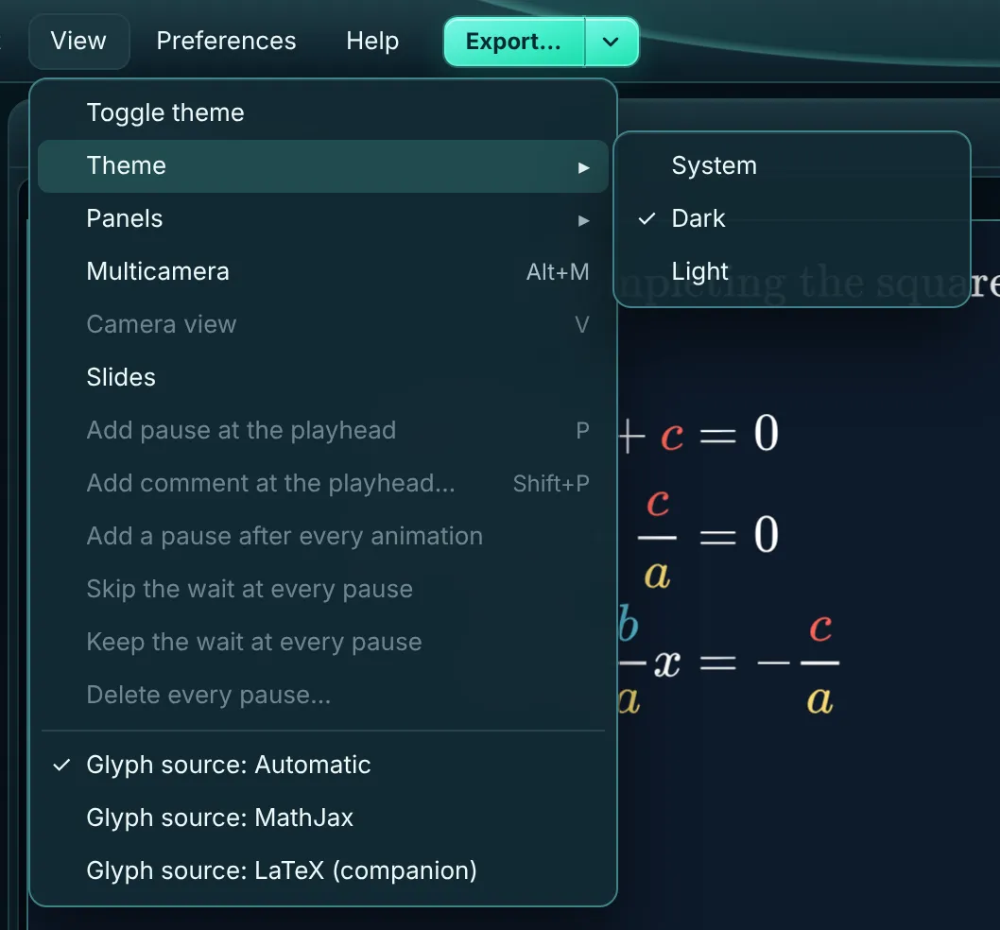
View ▸ Theme chooses between System, Dark and Light. System follows your operating system's setting, and follows it when it changes. The switch in the bar, and View ▸ Toggle theme, flip between dark and light, and from then on the choice is yours rather than the system's. The editor remembers it in this browser.
This documentation has a theme switch of its own in its header, and shows its pictures of the editor in the theme you are reading in.
High contrast
When the system asks for forced colours, as Windows high contrast does, the browser replaces the colours of the page with the system's. The editor stays readable: every state, such as selected, pressed or focused, keeps a ring, a border or an underline instead of relying on a colour, and the formulas in the Preview and in the Creator keep their own colours.
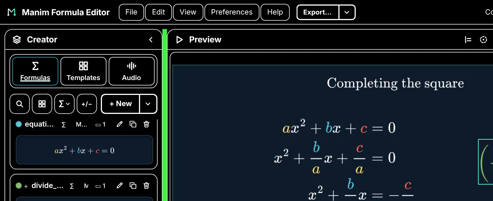
Using the keyboard
The menu bar works from the keyboard. Tab moves from one menu to the next, File first; ↓ opens the focused menu on its first entry (↑, on its last), and ← and → move to the previous or next menu, opening it if one is open. Home and End go to the first and last, a letter goes to the next menu that starts with it, and Esc closes the menu. Inside an open menu, ↓ and ↑ move between the entries, → on an entry that has a submenu opens it, and Enter chooses.
Where to go next
- Projects and files covers new, open and save, autosave and recovery, and the project library.
- Writing formulas begins the basics: the formula editor, its LaTeX fields and the Creator list.
- Every menu lists every entry of every menu, with its keys.